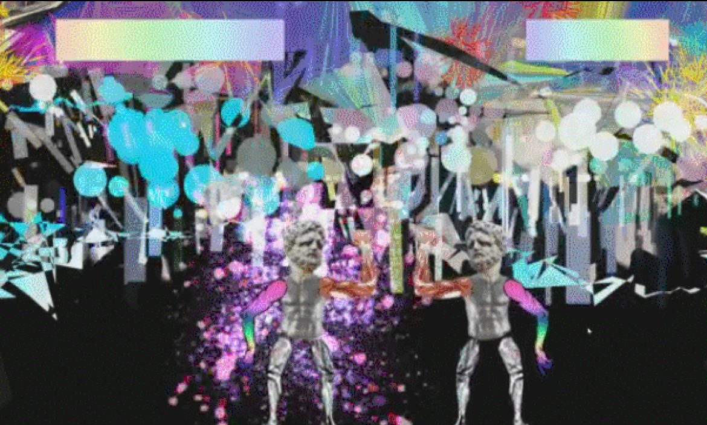
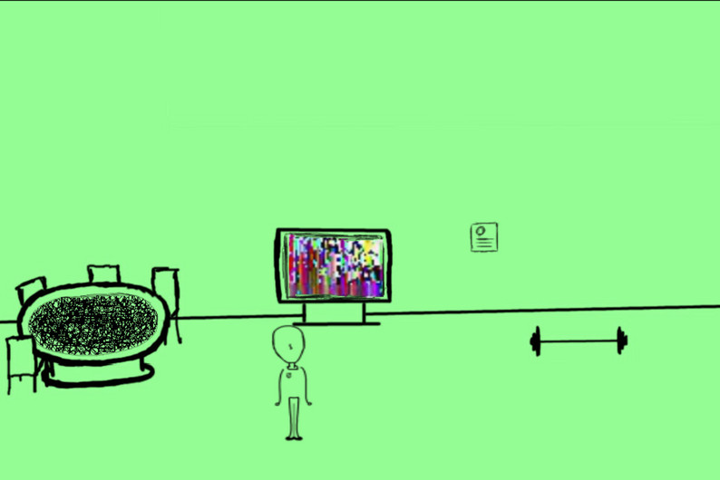
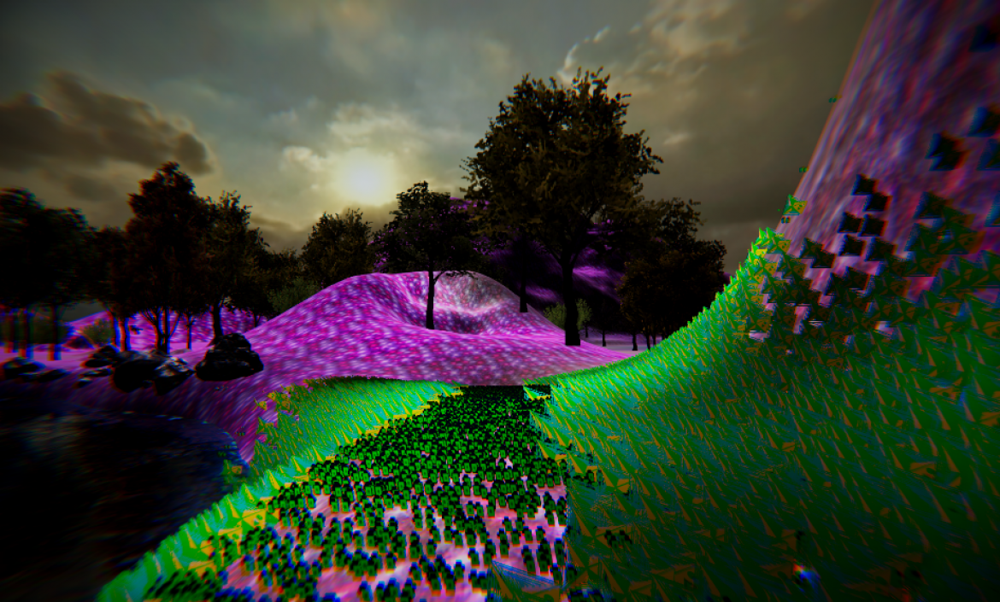

GAMES
Interference
Winner of the 2018 LSU Global Game Jam
Scan an abandoned research facility for crucial information while being attacked by an onslaught of cybernetic interlopers. Beware though, their cybernetic shielding can acclimate to your weapons.
Learn moreMuseum of Virtual Art II
Multiplayer, interactive gallery featuring the artists from New Aesthetic. Featured image by Elena Romenkova.
Learn moreKitty Girl Fly
Kitty Girl Fly features space-bending graphics as you navigate your character through wave after wave of monsters shooting deadly balls of energy.
Learn more
Quavers
It is the beginning of time. The universe exists as one infinitesimally small point, manifested as a platforming puzzle. During this fraction of a nanosecond, sound waves have an incredible effect on the nature of reality. Using the power of music, you must help guide a colony of quavers to their ascension, planting the seeds of intelligent life in the universe.
Learn more
Strung Out in Heaven's High
Do you remember a cat that’s been in such an early game? We know that the cat was sent to space. Connected, monitorized, trapped in a tin can. A cat sent to die for the sake of science. High on catnip his brain envisioned adventures of space discovery, intergalactic battles, heroes and glory.
Learn moreCalm

Based on the theme “Ritual.” Calm is a meditative ceremony that is performed to induce a state of zen.
Learn moreColosseum Stellarum
Two player fighting game where the victor becomes the Celestial Champion and fights for the gods.
Learn moreDepression Simulator
Depression Simulator is an interactive experience made to abstract the mindset of depression. Depression Simulator was created in one night, and is meant to convey our feelings and experiences. Void of story and direction, explore an unfamiliar dimension and discover the reality of the world around you.
Learn moreLast Man Alive
Last Man Alive is the story of the last human’s last moments. Earth is devastated by nuclear holocaust, wiping out all life on the planet. You are Jerry Jerry Lewis, an astronaut aboard the Second International Space Station. Walk around the station and choose how to spend your last fifteen minutes. There is no way to escape your certain demise. There are many ways to spend your time, but remember that every action takes time. Spend it wisely. It’s impossible to do everything.
Learn moreRainbow Runner
Rainbow Runner is a psychedelic first-person platformer. Taking place in the City of Panchromia, the game tells the tale of the systematic oppression of a disparate group of species by the city’s ruling regime.
Learn moreTripscape
Tripscape is Parallax Vision’s first game, made with the theme of psychedelic exploration. Starting with the music and working our way up, we made a landscape meant to blend naturally with the soundtrack. Tripscape was created in one night, and is meant to convey our feelings and experiences. Void of story and direction, explore an unfamiliar dimension and discover the reality of the world around you.
Learn more